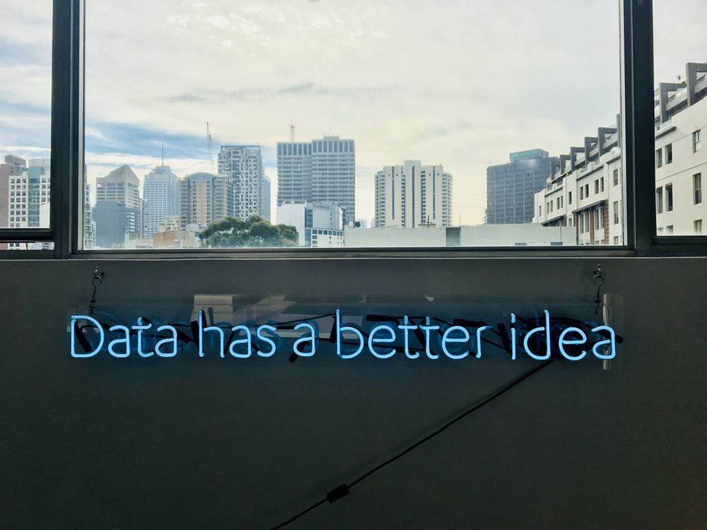

ML Portfolio

Being someone who is constantly interested in a lot of stuff, I had a hard time figuring out what my special skill should be. Generally never very stressed, I was quite tense about finding that one thing quickly. I tried graphic design, music production, coding and a lot of other things only to discover that out of these, I did fine at almost all but great at none.
Then a close friend suggested me to try machine learning out. I was already fascinated by its vast applications and innovation at its core. I found ML to be the exact thing I wanted. It's a complete combination of mathematics and coding.
I had a beginning way different than other people. I just jumped to Google's crash course on machine learning, which was all very new for me but at the same time, the content was so structured that with some stubbornness, I was able to finish the course and understand many important principles that are core to ML. I wouldn't suggest this to others though. You may lose your interest that way, for some people. You should first start with a Udemy course if you want to make it interesting and super easily understandable for you.
Another important step in this beautiful experience of ML learning is the one where I am currently. The one where you reach after you complete a few courses on basic data preprocessing, model building, training and testing, and parameter tuning. This part is when you join an online community for the enrichment of your knowledge. I don't think there is any place better than Kaggle for this. You can use a variety of dataset and test yourself. There are a lot of competitions where you can participate and improve with the help of discussions.
Work Samples
Several programming languages can be used for Machine Learning including Python, Java, R, C++ and more. Out of these, the most popular one is Python and that is also my first choice followed by R.
The framework I generally use is Google Colab, which is best in my understanding.
Following are short introductions to some of the important processes and model types in ML.
ML App Deployment
I worked on an Automotive data about Cars called Auto MPG Data for Regressive prediction about the MPG or Miles Per Gallon Performance metric of a car.
I used Flask and Heroku to Deploy this ML App on a website. Click on the link below to know more.
Face Recognition Model
Face recognition involves the task where the model should be able to see an input image and predict whether it belongs to one of the persons whose image is stored in the database.
I used Transfer Learning for this task where a pre trained model was used in order to encode the database images and input images. Click on the link below to access the associated files to know more.
Credit Card Detection Model
Credit Card Detection model that uses Deep Learning for dealing with highly imbalnced data. The main objective here is to maintain very low false negative predictions to avoid heavy economic losses.
NLP based News Type Classificatio Model
This project uses Natural Language Processing to classify a given news headline into one of the four news categories. We apply LSTM RNN to learn huge number of parameters and achieve 93% accuracy on test data.
Li-ion battery life cycle assessment and RUL Prediction
Case study of the Li-ion Battery life cycle and development of an ML algorithm for Remaining Useful Life Prediction as a tool in Predictive Maintenance for an LI-ion battery.
Used NASA’s PCoE battery datasets and applied LSTM Recurrent Neural Networks to predict on the temporal data.
I have shared many of my previous project works and associated files on my github reposatory. You can find those work sample files by clicking on the link below.